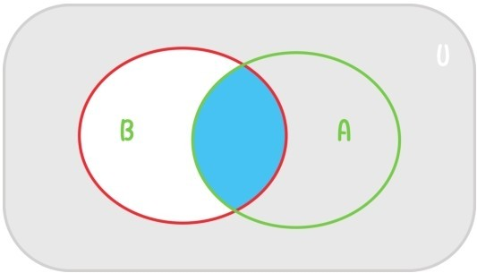
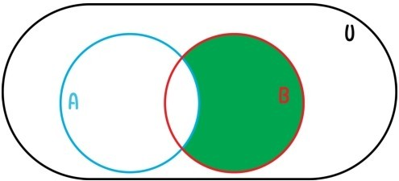

第一章第二节提到，在装有3个球的筐中放入6个新的球就变成9个球，这一类经验中就可以抽象出等式3+6=9。注意原先在筐中的3个球构成一个集合，后面放入的6个新的球也构成一个集合，合并这两个集合中的所有元素也可以构成一个新的集合，共包含3+6=9个球。
这里涉及两种集合运算。首先是任意两个集合A和B的并集，指的是合并A和B中的所有元素构成的集合，记作A⋃B。例如
其次是两个集合的交集，指的是同时属于A和B的所有元素构成的集合，记作A⋂B。例如
两个集合A和B没有共同元素，即A⋂B=∅时，称并集A⋃B为A和B的无交并。自然数的加法运算其实就是有限集合无交并的抽象。如果将每个有限集A的元素个数都记为#A，那么对于没有共同元素的两个有限集A和B，总会有#A+#B=#(A⋃B)，例如3个球的集合，和6个新球构成的集合合并，就会形成9个球的集合。
加法的交换律和结合律在集合的层面上就变成并集运算的交换律和结合律
减法在集合中也有对应的运算。令A是集合U的子集，则U中所有不属于A的元素构成的集合称为A（在U中）的补集，记作∁UA。在U中取走A的所有元素后，剩下的元素构成的集合正是∁UA，所以如果U是有限集，则∁UA中元素的个数正是等于#U-#A。
当仅限于讨论一个固定集合U（称为全集）的子集时，我们可以用图形来表示集合，其中大的矩形表示全集U，用矩形内部的圆圈表示U的某些子集。比如，下图中，两个圆圈部分分别表示集合A和集合B，相交的蓝色部分就是表示A⋂B，灰色部分就是表示∁UB。这种表示集合的图称为维恩图。

既然自然数的加法和减法运算在集合中都有对应的运算，难免有读者会问：
问题71：自然数的乘法运算是否有对应的集合运算？
例如，给定2个元素的集合{a,b}，和3个元素的集合{⊿，■，∠}，如何构成出一个2×3个元素的集合呢？很自然能想到的，就是这样一个集合：
那么对于任意两个集合A和B，该如何自然地定义它们的乘积（集合）A×B，才能使得当A和B都是有限集时，#(A×B)=#A×#B？
自然的做法就是将A×B定义为所有有序对(a,b)构成的集合，其中a，b分别是A和B中的元素
例如，若A={a,b}，B={a,b,c}，则
注意这个乘积中(a,b)和(b,a)是两个不同的有序对。若A'和B'分别是A和B的子集，则A'×B'也是A×B的子集。
两个集合乘积的典型例子就是平面上所有点的坐标(x,y)构成的集合，这个集合就是实数集合R与它自身的乘积R×R。
提问时间
11.2.1 证明下列3个命题是等价的：
A⋃B=A；A⋂B=B；B⊆A。
11.2.2 证明：对于任何3个集合A，B和C，都有
当A⋃B是无交并时，(A×C)⋃(B×C)也是无交并，上面等式在算术上对应着加法乘法分配律。
11.2.3 证明：若A和B都是集合U的子集，则
11.2.4 下面的维恩图中绿色部分所表示的集合是什么？（用集合符号描述）
